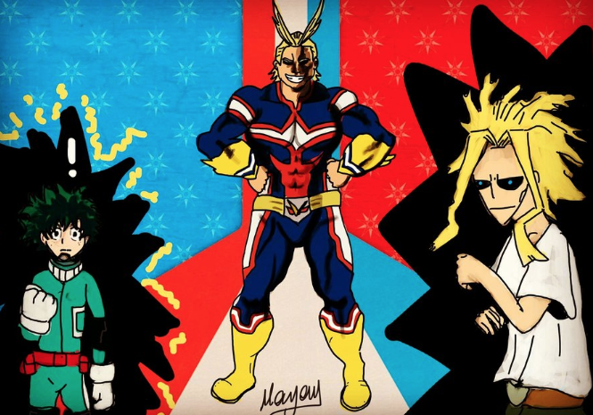
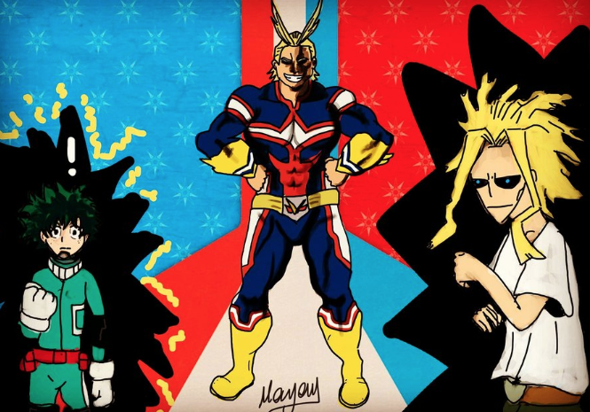

A propos de...
Ce site a ete créé dans le cadre du projet final du cours de télécommunication et s'adresse directement à mon professeur pour qu'elle puisse vérifer si j'ai bien réussi, ou non, mon travail.
Ce site s'adresse aussi aux gens qui aiment écouter des séries et qui cherchent du nouveau coutenu. La plus part des séries que j'ai choisi pour ce site sont vielles et souvent, trop souvent, oubliés alors qu'elles sont, de mon point de vu, des chef-d'oeuvre en soit. En esperant avoir bien répondu à vos questions et piquer votre curiositée, Guillaume Aube.
 
